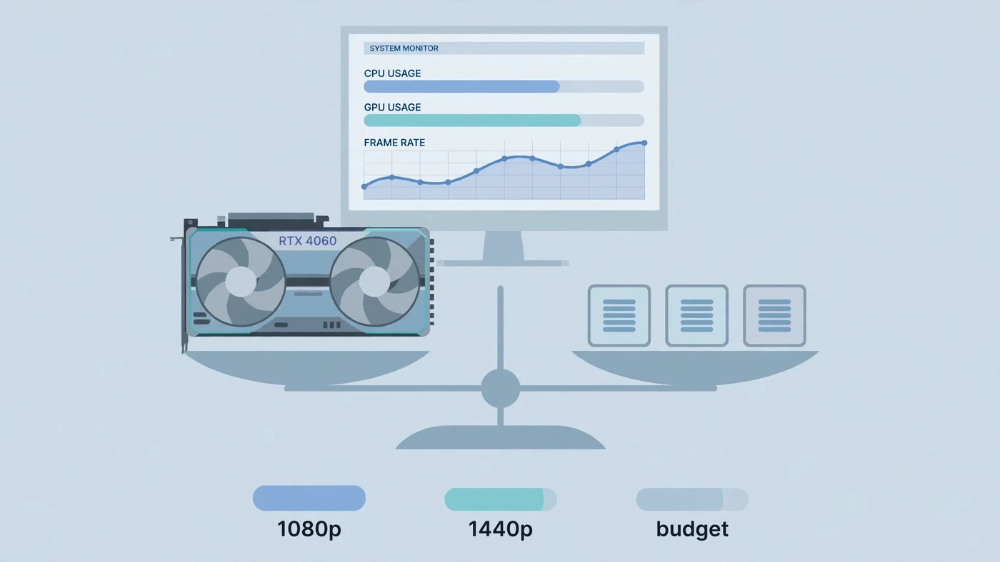

Best CPU for RTX 4060 and 4060 Ti: Balanced Pairing Guide
The best CPU for RTX 4060 is a fast modern six-core processor — and the right one depends on what you already own. For a new build, the AMD Ryzen 5 7600 is the pick: six fast cores, a boxed cooler in the box, and the AM5 socket leaves a real upgrade path. On a tight budget, the Intel Core i5-12400F does the same job for less, and if you already own an AM4 motherboard, a Ryzen 5 5600 keeps the card fed without a platform change. The RTX 4060 is an efficient 1080p card, so a mid-range CPU is all it needs — spending more on the processor buys almost nothing, because the graphics card becomes the limit first. This guide compares the picks that actually make sense, the platform costs that decide the real price, and the CPUs to skip.

Best CPU for RTX 4060: The Short Answer
The best CPU for RTX 4060, for most people building a new PC, is the AMD Ryzen 5 7600. It has six cores and twelve threads, boosts up to 5.1GHz, sips power at 65W, and comes with a Wraith Stealth cooler in the box — so there is nothing extra to buy. More importantly, it sits on AMD's AM5 socket, which means the motherboard and memory you buy today can take a much faster Ryzen chip later without replacing the whole platform. That upgrade path is what separates the 7600 from the cheaper options, and it is why it tops nearly every current pairing guide for this card.
But "best" is not the same as "cheapest that works", and the RTX 4060 is forgiving. It is a 115W card with 8GB of memory, built for 1080p gaming, and at that resolution the graphics card does most of the heavy lifting. Any modern six-core processor with decent single-thread speed keeps it fed: the Core i5-12400F on the Intel side, the Ryzen 5 5600 if you already own an AM4 board. The difference between these chips in most games at 1080p is small, because the GPU is the part setting the ceiling. The real decision is the platform around the chip — motherboard, memory, cooler and upgrade path — and that is where the total cost of the build is decided. Our CPU vs GPU bottleneck guide explains the general pattern.
The Best CPUs for RTX 4060 at a Glance
| Pick | CPU | Why it fits | Best for |
|---|---|---|---|
| Best overall | AMD Ryzen 5 7600 | Fast six cores, boxed cooler, AM5 upgrade path | New builds |
| Best budget Intel | Intel Core i5-12400F | Cheap, boxed cooler, works with DDR4 boards | Low-cost Intel builds |
| Best AM4 upgrade | AMD Ryzen 5 5600 | Keep your board and DDR4, no bottleneck at 1080p | AM4 owners upgrading the card |
| Best for multitasking | Intel Core i5-14400F | Ten cores for gaming with apps running alongside | Gaming plus streaming or work |
| Best AM5 step-up | AMD Ryzen 5 9600X | Newer Zen 5 cores, fastest single-thread here | New AM5 builds with a later GPU upgrade in mind |
| Best for esports | AMD Ryzen 5 7600X3D | 96MB of 3D V-Cache for high frame rates and smooth 1% lows | 144+ FPS in CS2, Valorant and Fortnite |
Every chip in this table keeps the RTX 4060 fed at 1080p. The choice between them is about platform, budget and what you play — not about whether the card will be bottlenecked, because with any of these, it will not be. Our best GPU for Ryzen 5 7600 guide looks at the same chip from the other direction, if you already own the processor and are choosing the card.
Best Overall: AMD Ryzen 5 7600
The Ryzen 5 7600 is the best CPU for RTX 4060 because it gets the balance right on every axis at once. Six Zen 4 cores and twelve threads with a boost up to 5.1GHz give it strong single-thread performance — the thing that actually sets the frame ceiling in most games — and the 65W rating means it runs cool and quiet on the cooler AMD includes in the box. You do not need an aftermarket cooler, and you do not need an expensive motherboard to feed it.
What really makes it the default pick is the platform. AM5 is AMD's current socket, and a board bought today can take a much faster Ryzen processor later, up to the big X3D chips, without touching the memory or the motherboard. That matters with an RTX 4060, because the most likely upgrade in a year or two is a faster graphics card — and when that card arrives, a 7600 on AM5 is still fast enough to feed it, while a cheaper dead-end platform would need a full rebuild. The 7600 also supports DDR5 memory and PCIe 5.0, and it unlocks Smart Access Memory, AMD's version of Resizable BAR, which lets the processor use the card's full memory for a small boost in supported games.
The one honest caveat is memory cost. DDR5 has become more expensive, so the total price of a 7600 build — chip, board and memory together — is higher than the budget Intel or AM4 options below. If the budget is truly tight, that platform cost can outweigh the upgrade path. Add up the whole platform before you compare chips, not just the processor price.
Best Budget Intel Pick: Core i5-12400F
The Core i5-12400F is the cheapest good CPU for the RTX 4060, and for a lot of builders it is the right answer. Six cores and twelve threads with a boost up to 4.4GHz, a boxed cooler included, and a socket — LGA1700 — that takes cheap DDR4 boards. That last point is the whole story: a 12400F build can reuse affordable DDR4 memory and a budget B660 or B760 motherboard, which keeps the total platform cost well below an AM5 build. In most games at 1080p, the difference between the 12400F and the Ryzen 5 7600 is small, because the RTX 4060 is the part setting the frame rate either way.
The trade-off is the upgrade path. LGA1700 is Intel's previous socket, so there is no new generation of chips coming to it — the fastest upgrade on the same board is a 13th or 14th generation chip, and beyond that you are replacing the platform. For a build that will keep the RTX 4060 for its whole life, that does not matter at all. If you already own a 12400F, there is no reason to change it for this card — our best GPU for i5-12400F guide shows which cards it pairs with.
Best for an AM4 Upgrade: AMD Ryzen 5 5600
If you already own an AM4 motherboard and DDR4 memory, the best CPU for RTX 4060 is the one you do not have to rebuild your PC for: the Ryzen 5 5600. Six cores and twelve threads, a boost up to 4.4GHz, 65W, and a Wraith Stealth cooler in the box — drop it into the board you own, update the BIOS if the board needs it, and the card is fed. No new motherboard, no new memory, no new cooler. It is the cheapest sensible pairing in this guide, and at 1080p it keeps the RTX 4060 busy in nearly every game.
The 5600's limits are real but narrow. It is a Zen 3 chip, so its single-thread speed is a step behind the 7600, and that shows up mainly in competitive shooters chasing very high refresh rates — CS2, Valorant and Fortnite at 240Hz or more — where the frame ceiling is set by the processor. In ordinary 1080p gaming at high settings, the graphics card is the limit and the gap mostly disappears. Our best GPU for Ryzen 5 5600 guide covers the other cards this chip pairs with, and the same logic applies: if the platform already exists, spend the money on the graphics card, not on a new socket.
One warning for AM4 buyers: do not step down to the cheaper Ryzen 5 5500 or the 5600G to save a little more. Both cut the L3 cache, and the 5500 and 5600G also offer fewer PCIe lanes — and the RTX 4060 only uses eight PCIe lanes itself, so on an older PCIe 3.0 board that combination can cost a little speed. The 5600 is the floor for this pairing, not the 5500.
Best for Gaming and Multitasking: Core i5-14400F
The Core i5-14400F is the pick if the PC does more than play games. Ten cores — six performance cores and four efficiency cores — and sixteen threads give it real headroom for Discord, a browser, a stream or a recording running alongside the game, where a six-core chip can start to feel crowded. Its boost reaches up to 4.7GHz, and like the 12400F it works with DDR4 or DDR5 boards on LGA1700, so the platform can stay cheap.
For pure gaming with the RTX 4060, the 14400F is not meaningfully faster than the 12400F — the extra efficiency cores do not raise frame rates in most games. You are paying for the headroom, not for frames. That makes it the right choice for streamers and for anyone whose PC is also a work machine, and a needless spend for a dedicated gaming box.
Best AM5 Step-Up: AMD Ryzen 5 9600X
The Ryzen 5 9600X is the newest six-core in this guide, built on AMD's Zen 5 architecture with a boost up to 5.4GHz — the fastest single-thread speed of any chip here. In games that lean on one fast thread, it edges out the 7600, and it sits on the same AM5 platform, so the upgrade path is identical. If you are building a new AM5 PC and the price gap to the 7600 is small, the 9600X is the better buy.
The catches are practical. The 9600X draws 105W rather than 65W, and it ships without a cooler in the box, so you must buy one — add that to the price before you compare. And the frame-rate gain over the 7600 with an RTX 4060 is small, because the graphics card is the limit in most games either way. The 9600X earns its place as the pick for a builder who plans to upgrade the graphics card later, not as a must-have for the 4060 itself.
Best for High-Refresh Esports: AMD Ryzen 5 7600X3D
Esports is the one place where the CPU choice changes the answer. In CS2, Valorant and Fortnite at competitive settings, the frame rate is set by the processor and the cache, not by the graphics card — and that is where AMD's 3D V-Cache chips earn their reputation. The Ryzen 5 7600X3D stacks 96MB of cache on six Zen 4 cores, which keeps the data the CPU needs close by and smooths out the 1% lows — the worst moments that decide whether a gunfight feels responsive. If your whole diet is competitive shooters at 144Hz or more, this is the chip that pushes the frame ceiling highest with an RTX 4060.
For everyone else, it is overspending. In story-driven AAA games at high settings, the graphics card is the limit and the extra cache buys almost nothing. The 7600X3D also costs notably more than the 7600 and needs a cooler bought separately. Buy it only if high-refresh esports is the point of the PC — our CS2 bottleneck guide and Valorant bottleneck guide both show why the processor matters so much in those games.
Best CPU for RTX 4060 Ti: Same Picks, One Step Up
The RTX 4060 Ti is a modest step up from the base card — more cores and a higher power draw — and it comes in 8GB and 16GB versions. The good news is that none of that changes the CPU answer. The same six-core picks suit the Ti: the Ryzen 5 7600 for a new build, the Core i5-12400F on a budget, the Ryzen 5 5600 for an AM4 board you already own. The two Ti models use the same GPU and differ only in VRAM capacity, so there is no different CPU requirement for the 8GB and 16GB versions — the extra memory only matters for texture-heavy games at 1440p, where the graphics card is the limit anyway.
One small shift: because the Ti is a little stronger, the case for the 9600X or the Ryzen 7 7700X gets slightly better, especially at 1440p with the 16GB card, where the graphics card can stretch further before it becomes the limit. But even there, an eight-core chip is a luxury, not a need — a fast six-core still keeps the Ti fed. If you are choosing between the base 4060 and the Ti, spend the difference on the card with more memory if you play at 1440p; our VRAM guide covers how much memory each resolution actually needs.
Platform Cost: Why the Cheapest CPU Is Not Always the Cheapest Build
The processor price is only part of the build, and with the RTX 4060 the platform around the chip decides the real cost. A Ryzen 5 7600 needs an AM5 motherboard and DDR5 memory, and DDR5 has become more expensive — so the total of chip, board and memory can cost notably more than a 12400F build on a DDR4 board, even if the chips themselves are close in price. The AM4 route is cheaper still if the board and memory already exist, because the only new part is the processor. Always add motherboard, memory and cooler prices to the CPU price before you compare.
Memory itself matters too. Sixteen gigabytes in dual channel is the realistic minimum for smooth gaming with this card, and two sticks in the right slots beat one stick by a clear margin — a single stick in single-channel mode costs real frames and shows up as stutter. Enable the memory's rated speed with the XMP or EXPO profile in the BIOS, or the RAM runs slower than you paid for. Our single vs dual channel guide and XMP/EXPO guide cover both checks, and they are the cheapest meaningful upgrades in this whole guide.
Power is the easy part. The RTX 4060 draws 115W and the whole system stays modest, so a good-quality 550W power supply covers any pairing in this guide with room to spare — there is no need for a big PSU, and a cheap no-name unit is still a false economy. Check the full build on the PC Bottleneck Calculator before you buy, and read its methodology page so you know what the estimate means.
CPUs to Skip With the RTX 4060
Two kinds of CPU are the wrong buy with this card. The first is anything too slow: an older quad-core, or anything older than roughly a Ryzen 5 3600 or a Core i5-10400F, will cap the frame rate before the RTX 4060 is fully loaded — the graphics card waits, usage sits low, and no settings change fixes it, because the processor sets the ceiling. If that is your current chip, the CPU is the upgrade, not the card.
The second is anything too fast. A Core i9, a Ryzen 9, or an X3D flagship like the 9800X3D will not make an RTX 4060 faster in games — once a fast six-core keeps the card fed, the graphics card is the limit, and a faster processor just waits for it. That money buys frames only if it goes to a faster graphics card, more RAM, a bigger SSD or a better monitor. For a gaming-only build with a 4060, the sweet spot is a fast six-core — or eight cores if you stream — and nothing more. Our best CPU for RTX 5070 guide covers the tiers where a faster processor actually starts to matter.
Free PC Bottleneck Calculator — Estimate CPU and GPU balance for your resolution and workload: check whether your CPU, GPU or VRAM is the slow half of the frame on the PC Bottleneck Calculator (see its methodology page) before you buy a new processor for your RTX 4060.
Conclusion
The best CPU for RTX 4060 is a fast modern six-core, and the right one is the one that fits your platform. Buy the Ryzen 5 7600 for a new build — fast cores, a cooler in the box and an AM5 upgrade path. Buy the Core i5-12400F if the budget is tight and a cheap DDR4 board keeps the total down. Keep the Ryzen 5 5600 if you already own an AM4 board. Step up to the 14400F for multitasking, the 9600X for the fastest AM5 six-core, or the 7600X3D if high-refresh esports is the whole point of the PC. The same picks suit the RTX 4060 Ti, in either 8GB or 16GB form. Skip anything slower than a modern six-core, and skip the i9 and Ryzen 9 tier — with this card, that money buys no frames. Add up the whole platform, run the pairing through the calculator, and spend what is left on the part that actually draws the game.
Frequently Asked Questions
What is the best CPU for RTX 4060?
For a new build, the best CPU for RTX 4060 is the AMD Ryzen 5 7600: six fast cores, a boxed cooler included, and the AM5 socket leaves an upgrade path to a much faster chip later. On a tight budget, the Intel Core i5-12400F or the Ryzen 5 5600 on an AM4 board you already own both keep the card fed at 1080p with no real bottleneck.
What CPU won't bottleneck a 4060?
Any modern six-core processor with strong single-thread performance will not bottleneck an RTX 4060 at 1080p — the Ryzen 5 5600, Ryzen 5 7600, Core i5-12400F and Core i5-14400F all qualify. The chips that do hold the card back are older quad-cores and anything older than roughly a Ryzen 5 3600 or a Core i5-10400F, where slow single-thread speed caps the frame rate before the GPU is fully loaded.
Is the Ryzen 5 5600 enough for RTX 4060?
Yes, at 1080p. The Ryzen 5 5600 has six cores and twelve threads with a boost clock up to 4.4GHz, which is enough to keep the RTX 4060 fed in most games, and it is the cheapest sensible upgrade if you already own an AM4 motherboard and DDR4 memory. It falls behind the Ryzen 5 7600 mainly in single-thread speed and in esports titles chasing very high refresh rates, not in ordinary 1080p gaming.
Do you need a different CPU for the RTX 4060 Ti 8GB and 16GB?
No. The two RTX 4060 Ti models use the same GPU and differ only in VRAM capacity, so their CPU requirements are the same. The same six-core picks — the Ryzen 5 7600, Ryzen 5 9600X or Core i5-14400F — suit both versions, and the 16GB card's extra memory only matters for texture-heavy games at 1440p, where the GPU is the limit anyway.
Is an i9 or Ryzen 9 overkill for the RTX 4060?
Yes, for gaming alone. The RTX 4060 is a 1080p graphics card, and once a fast six-core processor keeps it fed, a faster CPU cannot raise the frame rate — the graphics card is the limit. The money is better spent on a faster GPU, more RAM, a bigger SSD or a better monitor. A high-end CPU only makes sense with the RTX 4060 if you also do heavy rendering, compiling or streaming work that uses the extra cores.
Sources
Official documentation referenced in this guide:
- NVIDIA: GeForce RTX 4060 Specifications (8GB GDDR6, 115W, PCIe 4.0 x8)
- AMD: Ryzen 5 7600 Processor Specifications (6 cores, boost up to 5.1GHz, 65W, Wraith Stealth cooler)
- AMD: Ryzen 5 5600 Processor Specifications (6 cores, boost up to 4.4GHz, 65W, AM4)
- Intel: Locate and Resolve CPU-GPU Bottlenecks (per-core CPU usage vs GPU usage patterns)